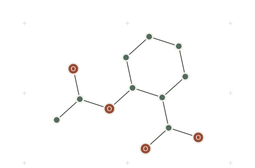

Molecular ML / PyTorch
Molecular learning.
Made accessible.
Predict properties, learn representations, and generate molecules with a familiar Python interface.
pip install torch-moleculeAspirin / molecular graph

31 model classes
Predict. Encode. Generate.
01 / Prediction
Predict
Connect molecular structure to properties. Train regression and classification models.
GNN · GREA · GRIN
11 predictors Explore the API →
02 / Representation
Encode
Turn molecules into useful vectors for similarity search and downstream learning.
GraphMAE · MoAmA · SAND
9 encoders Explore the API →
03 / Generation
Generate
Explore chemical space with graph diffusion, sequence models, and molecular search.
GraphDiT · GenMol · DemoDiff
11 generators Explore the API →
Python API
A familiar interface.
A molecular input.
Start with SMILES. Configure a model, call fit(), and put it to work.
Explicit parameters, CPU and GPU support, and local checkpoints.
Follow the quickstartfrom torch_molecule import GNNMolecularPredictor
smiles = ["CCO", "CCCO", "c1ccccc1", "CCOC(C)=O"]
mass = [[46.07], [60.10], [78.11], [88.11]]
model = GNNMolecularPredictor(
num_task=1, task_type="regression",
num_layer=2, hidden_size=64, epochs=10,
)
model.fit(smiles, mass)
result = model.predict(["CCCCO"])
print(result["prediction"])from torch_molecule import AttrMaskMolecularEncoder
smiles = ["CCO", "CCCO", "c1ccccc1", "CCOC(C)=O"]
encoder = AttrMaskMolecularEncoder(
num_layer=2,
hidden_size=64,
epochs=10,
)
encoder.fit(smiles)
embeddings = encoder.encode(smiles)
print(embeddings.shape)from torch_molecule import DemoDiffMolecularGenerator
smiles = ["CCO", "CCCO", "c1ccccc1", "CCOC(C)=O"]
model = DemoDiffMolecularGenerator(
num_layer=2, hidden_size=64, num_head=4,
diffusion_steps=20, epochs=25,
learning_rate=1e-3,
)
model.fit(smiles)
molecules = model.generate(n_samples=5)
print(molecules)Featured methods
Explore the methods.
Documentation